Contents
clc close all; clear all;
Section 1 and 2
freq1 = 0.01; freq2 = 0.1; freq3 = 0.4; n_in = 256; nv = 0:(n_in - 1); x1 = [1 , zeros(1,255)]; figure(1) subplot(2,2,1) x2 = square(nv*2*pi/256); stem(nv(1:n_in),x2(1:n_in)) subplot(2,2,2) x3 = cos(freq1*2*pi*nv); stem(nv(1:n_in),x3(1:n_in)) subplot(2,2,3) x4 = cos(freq2*2*pi*nv); stem(nv(1:n_in),x4(1:n_in)) subplot(2,2,4) x5 = cos(freq3*2*pi*nv); stem(nv(1:n_in),x5(1:n_in))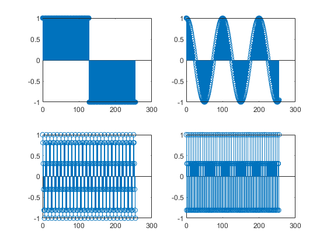
Section 3
a = [1.0,-0.9]; b = 1; figure(2) subplot(2,1,1) y1 = filter(b,a,x1); plot(nv(1:n_in),y1(1:n_in)) hold on y2 = filter(b,a,x2); plot(nv(1:n_in),y2(1:n_in)) hold off subplot(2,1,2) y3 = filter(b,a,x3); plot(nv(1:n_in),y3(1:n_in)) hold on y4 = filter(b,a,x4); plot(nv(1:n_in),y4(1:n_in)) y5 = filter(b,a,x5); plot(nv(1:n_in),y5(1:n_in)) hold off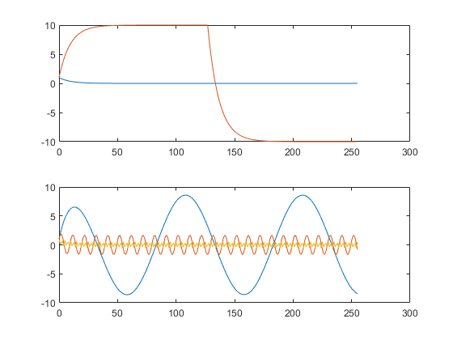
Section 4
a = [1.0,-0.9]; b = 1; figure(3) title('System 2') subplot(2,1,1) y1 = filter(b,a,x1); plot(nv(1:n_in),y1(1:n_in),'r') hold on y2 = filter(b,a,x2); plot(nv(1:n_in),y2(1:n_in),'g') hold off subplot(2,1,2) y3 = filter(b,a,x3); plot(nv(1:n_in),y3(1:n_in),'r') hold on y4 = filter(b,a,x4); plot(nv(1:n_in),y4(1:n_in),'g') y5 = filter(b,a,x5); plot(nv(1:n_in),y5(1:n_in),'b') hold off % y3 = 8.59, y4 = 1.6, y5 = 0.5291 % y3 has the highest amplitude and y5 has the lowest amplitude % The impulse response is the output when presented witha brief input % signal. % For the step response you can see that the filter function created a rise % time for the values to reach its peak and a fall time for it to reach its % minimum. The impulse function shows the small falltime untilit reached % zero. % What is the steady state response after a step input? % It oscillates from -10 to 10 % y(n) = x(n) +1y(n-1)- 0.9y(n-2)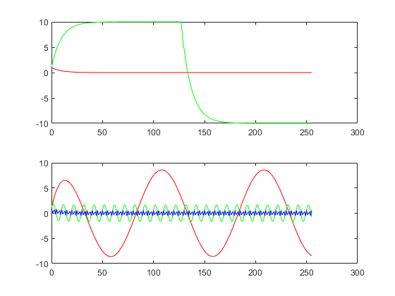
Section 5
Comparison of two first order systems.
a = [1.0,0.9]; b = 1; figure(4) subplot(2,1,1) y1 = filter(b,a,x1); plot(nv(1:n_in),y1(1:n_in)) hold on y2 = filter(b,a,x2); plot(nv(1:n_in),y2(1:n_in)) hold off subplot(2,1,2) y3 = filter(b,a,x3); plot(nv(1:n_in),y3(1:n_in),'r') hold on y4 = filter(b,a,x4); plot(nv(1:n_in),y4(1:n_in),'g') y5 = filter(b,a,x5); plot(nv(1:n_in),y5(1:n_in),'b') hold off % 4. y3 = 0.524, y4 = 0.529, y5 = 1.66 % y5 has the highest amplitude and y3 has the lowest amplitude % For the impulse there is an initial oscillation that stabilizes at 0 after a short time %for the step function there is an oscillation during the rise period to the %high value until it stabilizes and then another delayed oscillation during the fall time %to the low value until it stabilizes after a short period of time % It oscillates from -1.75 to 1.75 % y(n) = x(n) +1y(n-1)+ 0.9y(n-2) % 5. Compare System 1 and System 2. % • What is the effect of changing the sign of a(2) on the impulse and step % response for these two systems? % The LPF will become a HPF as the second value will be the negative of the % original % • What do you think will happen if the absolute value of a(2) is decreased? % Why? %The steady state amplitude will be lower becasue the denominator is %higher. % • What do you think will happen if the absolute value of a(2) is increased? % Why? %The steady state amplitude will be higher becasue the denominator is %smaller. % • If System 1 is used as an “exponential average”, what value should b(1) have % to insure that for a constant input value, the output will be that same value? % We should have 0.1 or 1/10 because the times constant is 10 samples.
 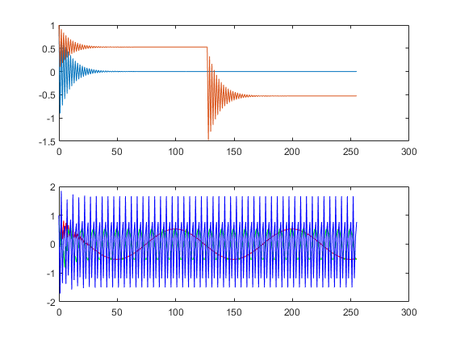
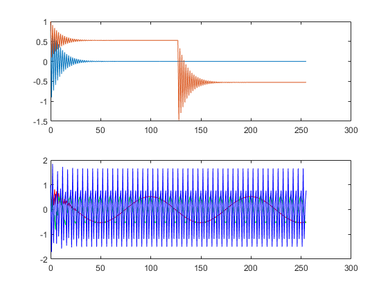 Comparison of Four Second Order Systems
alpha = 0.95; alpha2 = 0.99; w = 2 * pi * 0.1; % System 3 a3 = [1, -2*alpha*cos(w), alpha^2]; b3 = [1, -alpha*cos(w)]; figure(5) subplot(2,1,1) y1 = filter(b3,a3,x1); plot(nv(1:n_in),y1(1:n_in)) hold on y2 = filter(b3,a3,x2); plot(nv(1:n_in),y2(1:n_in)) hold off subplot(2,1,2) y3 = filter(b3,a3,x3); plot(nv(1:n_in),y3(1:n_in),"r") hold on y4 = filter(b3,a3,x4); plot(nv(1:n_in),y4(1:n_in),"g") y5 = filter(b3,a3,x5); plot(nv(1:n_in),y5(1:n_in),"b") hold off % System 4 a4 = [1, -2*alpha*cos(2*w), alpha^2]; b4 = [1, -alpha*cos(2*w)]; figure(6) subplot(2,1,1) y1 = filter(b4,a4,x1); plot(nv(1:n_in),y1(1:n_in)) hold on y2 = filter(b4,a4,x2); plot(nv(1:n_in),y2(1:n_in)) hold off subplot(2,1,2) y3 = filter(b4,a4,x3); plot(nv(1:n_in),y3(1:n_in),"r") hold on y4 = filter(b4,a4,x4); plot(nv(1:n_in),y4(1:n_in),"g") y5 = filter(b4,a4,x5); plot(nv(1:n_in),y5(1:n_in),"b") hold off % System 5 a5 = [1, -2*alpha2*cos(w), alpha2^2]; b5 = [1, -alpha2*cos(w)]; figure(7) subplot(2,1,1) y1 = filter(b5,a5,x1); plot(nv(1:n_in),y1(1:n_in)) hold on y2 = filter(b5,a5,x2); plot(nv(1:n_in),y2(1:n_in)) hold off subplot(2,1,2) y3 = filter(b5,a5,x3); plot(nv(1:n_in),y3(1:n_in),"r") hold on y4 = filter(b5,a5,x4); plot(nv(1:n_in),y4(1:n_in),"g") y5 = filter(b5,a5,x5); plot(nv(1:n_in),y5(1:n_in),"b") hold off % System 6 a6 = [1, -2*alpha*cos(w), alpha^2]; b6 = [0, alpha*sin(w)] ; figure(8) subplot(2,1,1) y1 = filter(b6,a6,x1); plot(nv(1:n_in),y1(1:n_in)) hold on y2 = filter(b6,a6,x2); plot(nv(1:n_in),y2(1:n_in)) hold off subplot(2,1,2) y3 = filter(b6,a6,x3); plot(nv(1:n_in),y3(1:n_in),"r") hold on y4 = filter(b6,a6,x4); plot(nv(1:n_in),y4(1:n_in),"g") y5 = filter(b6,a6,x5); plot(nv(1:n_in),y5(1:n_in),"b") hold off % 2. Compare System 3 and System 4. % • Describe the impulse response of each system. %The impulse response for both systems is initial oscillation whose magnitude approaches 0. System 4 has a greater frequency of oscillation than system 3. % • How does using 2w instead of w affect the impulse and step responses? % Doubling the freqeuncy increases the oscillation for both the impulse and step responses, but only affects the magnitude for the step response. % • How does using 2w instead of w affect the response to the cosines at the % three different input frequencies? % The 0.01 Hz signal has a transient oscillation with a larger fundamental amplitude is lower in magnitude but lasts longer, % The 0.1 Hz signal takes longer to reach steady state, amplitude is greater % The 0.4 Hz signal has less transient oscillation but it lasts longer, amplitude is greater % 3. Compare System 3 and System 5. How does increasing alpha affect: % • the duration of the impulse responses? % Increasing the alpha effect causes the system to take longer to reach steady state % and as a result, the impulse response for system 5 is still oscillating by the final sample. % • the relative response to the three different input frequencies? % The 0.01 Hz signal has a transient oscillation with a larger fundamental amplitude is lower in magnitude but lasts longer, % The 0.1 Hz signal takes longer to reach steady state, amplitude is greater % The 0.4 Hz signal has less transient oscillation but it lasts longer, amplitude is greater % 4. Compare System 3 and System 6: % • Compare the impulse and frequency responses over the full time interval. % Zoom in on the first 20 samples and compare again. % The impulse response is very similar, but system 6 starts a sine % behaviour while the system 3 starts a cosine behaviour. All with the same % frequency. % • Compare the steady state amplitudes of the responses to cosines at the % three different input frequencies. % The 0.1Hz has a similar amplitudes while the 0.01Hz is rejected by the % System 3, while the system 6 rejects the 0.4Hz better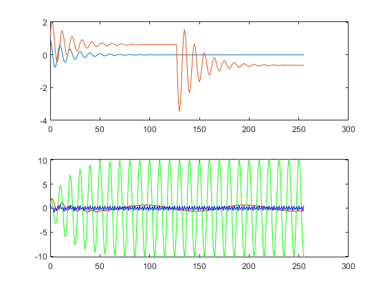 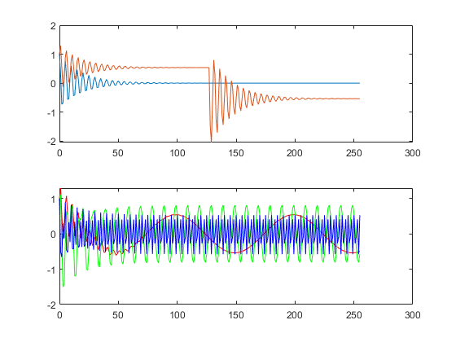 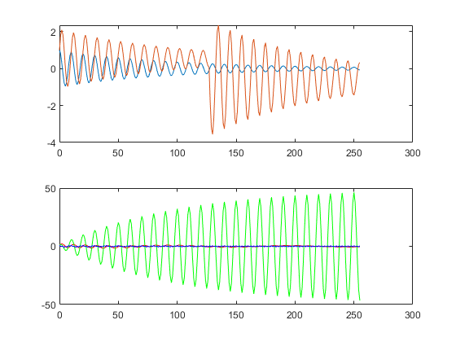 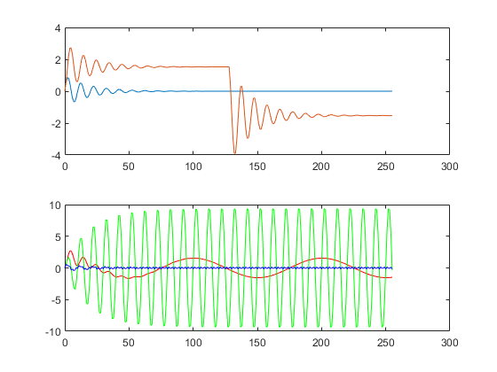
Cascade connection of two first order systems
a1 = [1.0,-0.9]; b1 = 1; a7 = 1; b7 = [1,-0.9]; % impulse response figure(9) subplot(2,1,1) h1 = filter(b1,a1,x1); stem(nv(1:50),h1(1:50)) subplot(2,1,2) h7 = filter(b7,a7,x1); stem(nv(1:50),h7(1:50)) % cascade connections figure(10) subplot(2,1,1) z7 = filter(b7,a7,h1); stem(nv(1:10),z7(1:10)) subplot(2,1,2) z1 = filter(b1,a1,h7); stem(nv(1:10),z1(1:10)) % 3. Draw block diagrams for the two cascaded systems and label h1, z7, h7, and z1. % Check external figure. % % 4. Analytically compute the first 5 values of y1, z1, y7, and z7. % y1 = 1, 0.9, 0.81 , 0.7290, 0.6561 % z1 = 1, 0 , 0 , 0 , 0; % y7 = 1,-0.9, 0 , 0 , 0; % z7 = 1, 0, 0 , 0 , 0; % % 5. y7 and z7 has an extra impulse at n=1 and would decrease to zero slower.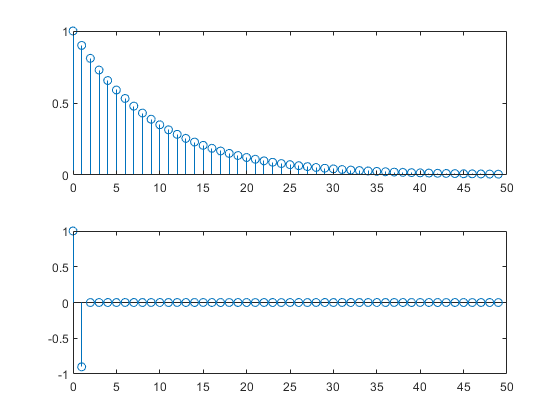 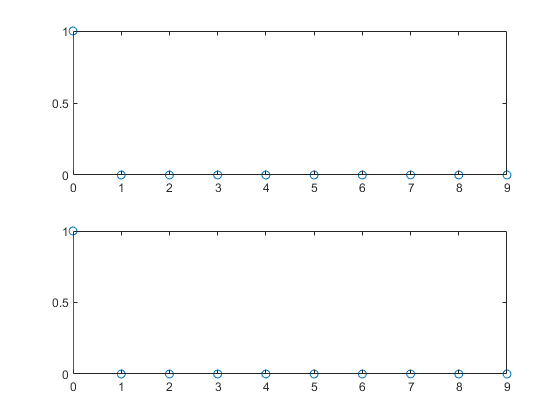